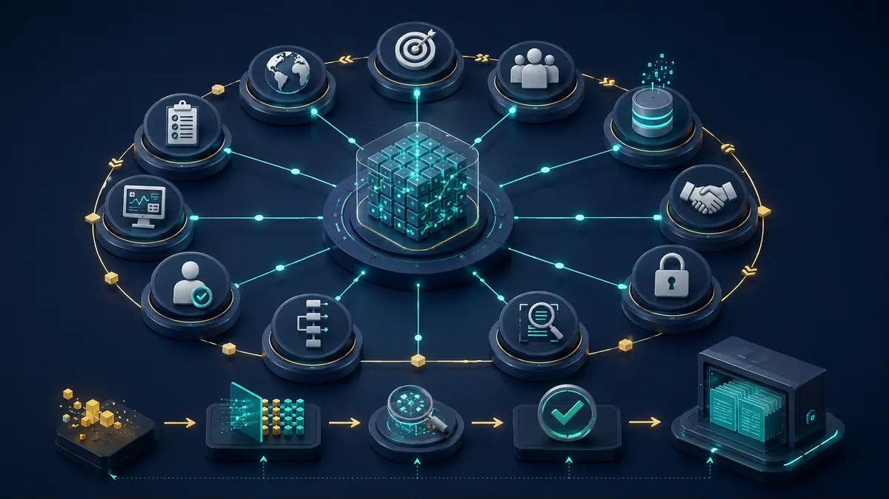

Technologie, die im Betrieb überzeugt.
BAIS verbindet Engineering, Security, Automation und Governance zu Lösungen, die nicht bei der Präsentation enden – sondern nachvollziehbar gebaut, geprüft und übergeben werden.
- Secure by Design
- Klare Evidence
- Betriebsfähige Übergabe
Vier Disziplinen.
Ein belastbares System.
Keine isolierten Einzellösungen: Architektur, Schutz, Automatisierung, Wissenstransfer und Nachweise greifen von Anfang an ineinander.
AI Engineering & Automation
RAG, interne Assistenten, APIs und n8n-Workflows mit messbarer Qualität und sauberer Übergabe.
- AI Engineering
- Document Intelligence
- n8n & API Integration
Cybersecurity
Security-by-Design für Identitäten, Zugriffe, Secrets, Cloud, Logging und sichere Betriebsgrenzen.
- Architecture Review
- Hardening & Controls
- Monitoring & Evidence
BAIS Academy
Praxisorientierte Lernpfade für AI Literacy, Security, Automation, Governance und Projektmanagement.
- Rollenbasierte Lernpfade
- Workshops & Labs
- Prüfbare Lernergebnisse

AI Governance & Advisory
Systemregister, Risiko-Triage, Controls, Evidence und Lifecycle-Governance für reale Betriebsfähigkeit.
- EU AI Act Orientierung
- ISO-orientierte Controls
- R-001–R-012 Risk Framework
Vom Problem zur kontrollierten Lösung.
Jede Phase erzeugt ein sichtbares Ergebnis. So bleiben Entscheidungen, Qualität, Risiken, Freigaben und nächste Schritte für alle Beteiligten nachvollziehbar.
Nicht behaupten.
Zeigen.
Erkunden Sie die bereits aufgebauten Arbeitsbereiche: interaktive Governance, Academy-Angebote, technische Demonstratoren und transparente Projektabwicklung.
Technisch tief.
Geschäftlich klar.
Gute IT muss nicht kompliziert wirken. Wir übersetzen technische Möglichkeiten in klare Entscheidungen, kontrollierte Umsetzung und verständliche Ergebnisse.
BAIS kennenlernen →